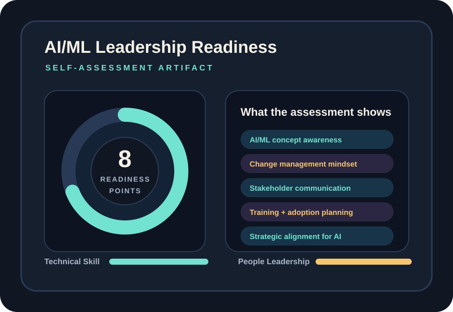

Artifact Information
Introduction
This artifact presents a professional self-assessment focused on the leadership skills needed to guide successful AI/ML adoption in workplace environments.
It frames AI adoption as both a technical and organizational challenge, showing that readiness depends on communication, coordination, training, and clear leadership responsibility across teams.
Description
The assessment connects technical AI understanding with communication, change readiness, governance, and the planning needed to introduce AI responsibly across teams.
Rather than treating implementation as a technology-only initiative, this artifact highlights the role of stakeholder trust, business alignment, and structured change support in making AI/ML adoption sustainable.

The assessment view summarizes readiness signals, highlighting where leadership communication is already strong and where more structured support is still needed.
Objective
- Assess AI/ML leadership readiness
- Identify strengths and development areas
- Connect AI adoption with business alignment
Process
- Reviewed leadership and change-management criteria
- Evaluated communication, strategy, and support needs
- Reflected on strengths in adaptability and learning
- Identified planning, training, and governance gaps
- Connected assessment findings to realistic workplace adoption scenarios
- Organized results into strengths, readiness signals, and development priorities
Tools and Technologies Used
Value Proposition
This artifact demonstrates that effective AI adoption depends on people-centered leadership, communication, planning, and change support in addition to technical knowledge.
Unique Value: Connects AI understanding with leadership readiness.
Relevance: Useful for professionals guiding AI change in organizations.
Reflection
This artifact strengthened my understanding that successful AI adoption requires strategic thinking, stakeholder trust, and ongoing learning rather than technical implementation alone.
References
AI/ML leadership self-assessment materials; change-management concepts; organizational AI adoption resources